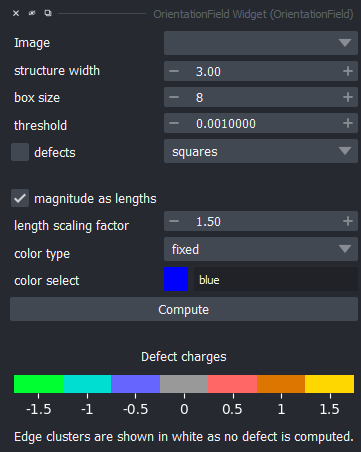

Usage¶
Now that you’ve installed OrientationField, let’s see how you can use it. This tutorial will suppose you’re in the conda environment you installed OrientationField in.
Within napari¶
Open napari from a command line by entering napari.
In napari’s toolbar, navigate to Plugins -> OrientationField Widget. This will open the widget, which looks like this:
{kind=link}

We were mindful to order the parameters according to the following principle: computation-specific parameters first, visuals-specific parameters second.
Parameters: Nematic Field and Topological Defect Computation
- When loading images into napari, the image layers will automatically be added to the
Imagedropdown in the widget. You can of course select any other loaded Image layer with this dropdown. Make sure the image you want to use OrientationField on is grayscale, or else it won’t work.
- When loading images into napari, the image layers will automatically be added to the
- Select the structure width parameter according to the scale of the structure whose nematic field you want to consider.
Typically, a larger structure width is preferable, but if it is too large you will start to see the orientation of the larger structures in your image.
Select the box size. This controls the size of each box inside of which a nematic is computed. This will affect the computation of topological defects and must be selected carefully if defects are of interest to you.
Select the magnitude threshold under which nematics will not be displayed. This will affect the computation of topological defects and must be selected carefully if defects are of interest to you.
If you want to look at the topological defects in your image, check the
defectscheckbox. You can find more information on the defect computation in :ref:defects.
For more information, see Usage Appendix: Parameter Selection.
Parameters: Visuals
Select whether or not you want to scale the bars’ lengths with their associated nematic’s magnitude by checking or unchecking
magnitude as lengths.Sometimes, the range of magnitudes is very big and you want to scale all the bars by a certain amount, to better make out all the different orientations.
Choose how to color the nematics:
fixed: color the bars with a fixed color, in which case you have a color selector to pick the nematics’ color.
angle: color the bars according to their angle. We recommend using this with a circular colormap, such ashsv.
norm: color the bars according to their nematics’ norm (magnitude). This works well with “dark-to-bright” colormaps such asmagmaorviridis.
Computing
Click on Compute. If this is the first time you clicked on compute with the given computation paraemters,
OrientationField will compute a per-pixel nematic field for the image, and store it in its napari layer metadata.
This design choice allows OrientationField to use the cached nematic field again if you just want to do a small visual change to the nematic field display.
Do note that if you change the computation parameters, OrientationField will have to compute the per-pixel field again.
For defect computation, defects will be recomputed every time.
You will find that you now have many new layers.
<img-name> - nematic fieldcontains the nematic field as oriented bars spaced out according to the selected box size.<img-name> - edge clusterscontains the areas of low nematic magnitude that touch an edge. These are in white, you should make sure no area of interest is in one of these clusters because we do not provide any information about these areas (computing a defect charge is impossible without edge information).<img-name> - clusterscontains the other areas of low magnitude. Some of these are not defects, you will know this when the cluster is colored in grey, which corresponds to a charge of 0. A color mapping of charges from -1.5 to +1.5 is always on display on the widget.<img-name> - points defectscontains the defects found in the intersection of boxes, as defined in the widget parameters. By construction, these can only ever be -0.5 or +0.5.
Using the API¶
You can find a full reference of the API in OrientationField API Reference.
There are two ways of using the API:
Scripting for the napari viewer. This will result in the same general workflow but you gain the benefits of being able to automate nematic field layer generation. If you have some preprocessing to do on your data before using OrientationField, and don’t want to save the processed image, for example, this is the way to go.
Using the
nematicfieldsubmodule to bypass the napari viewer. Only use this if you need the nematic field information and don’t want to save the topological defects in your data.
Import using:
from orientationfield import nematicfield # to compute the nematic field itself
from orientationfield import of_script # napari-related functions, defects
As a rule of thumb, the nematicfield submodule is less restrictive with what you can do, but requires more work.
For example, in the nematicfield module, you will need to make sure your image height and width are divisible by the box size. In of_script, the functions take care of that for you.
You have examples of code usage in Examples.